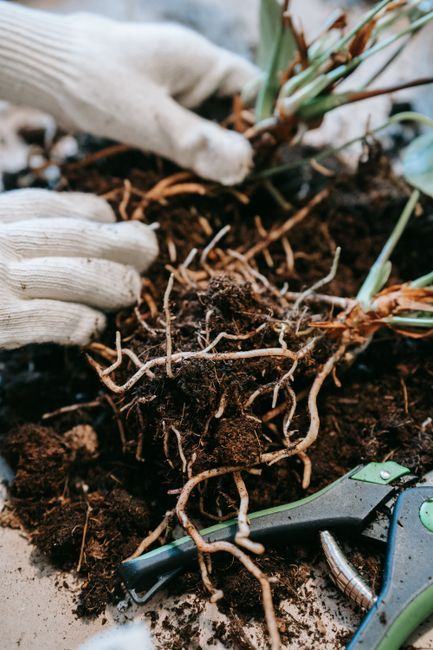
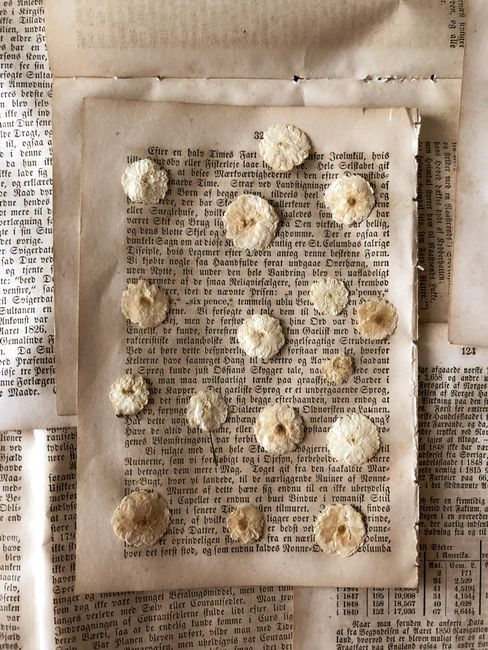
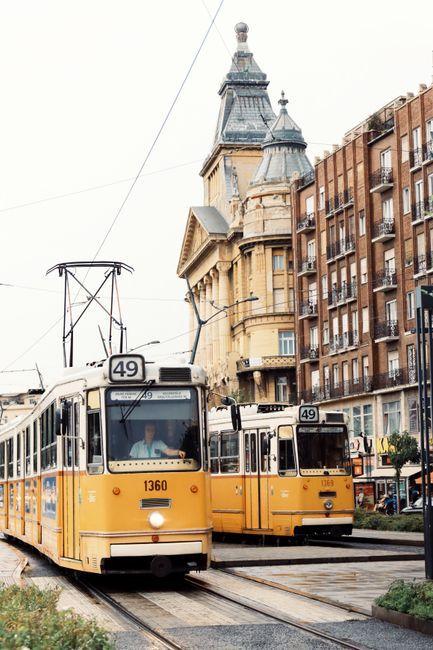
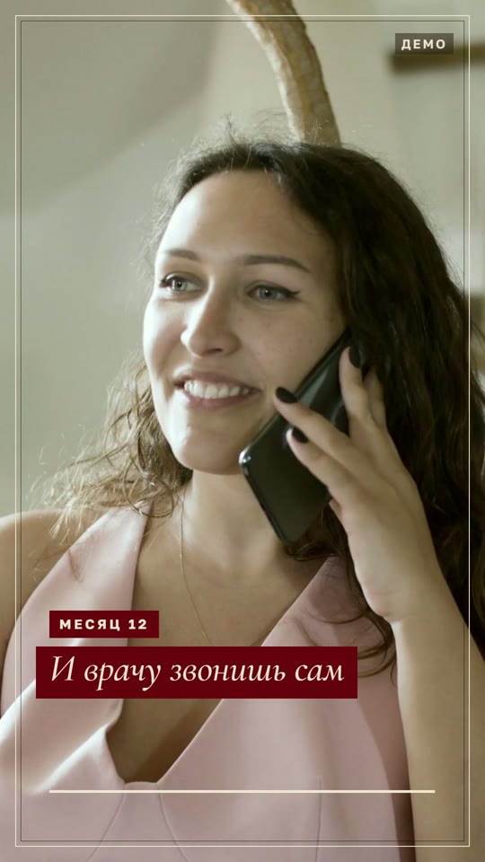
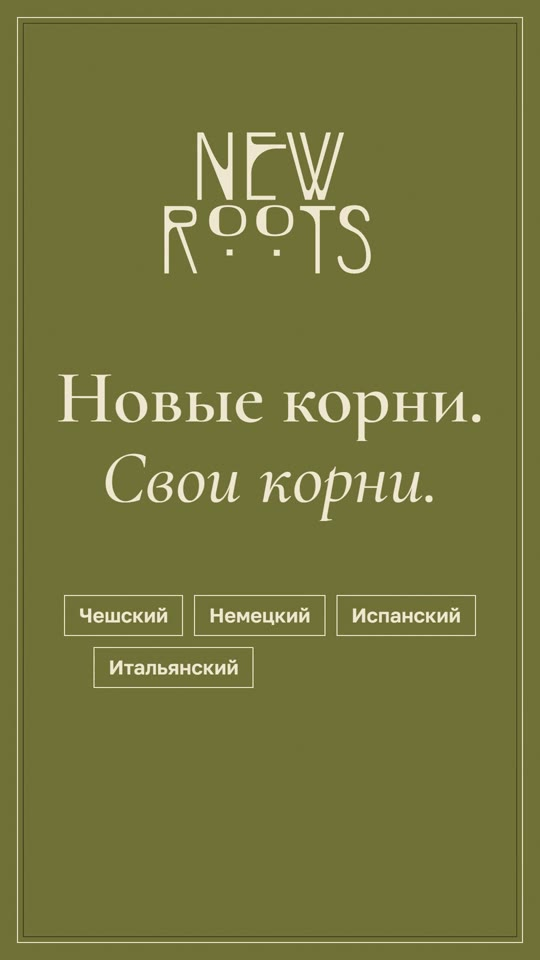
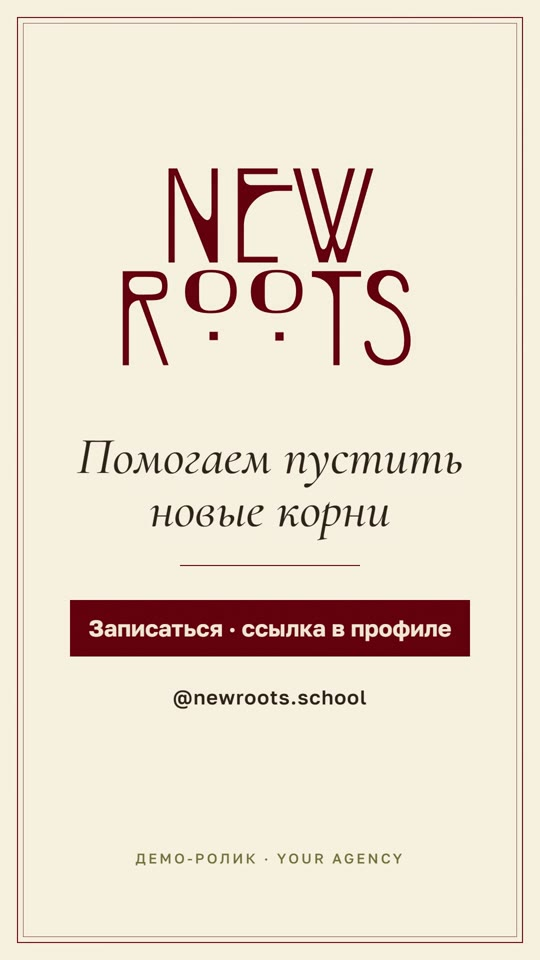

Наш набросок: идея, стиль, рубрики, карточки учителей и план запуска. Это не финал, а основа, от которой будем отталкиваться вместе. Листай.
Свайп или стрелка

Главная мысль
Пустить новые корни и не потерять свои
Новые корниЯзык страны, где ты теперь живёшь: работа, документы, школа, экзамены, друзья.
Свои корниРодной язык рядом: русский для детей и взрослых, чтобы дома говорили на своём.
Это уже есть в названии. Работает для любого языка и любой страны, сразу про взрослых и детей.
Одна фраза о школе
Слоган выбран
основной
Главный слоган идёт в био, на обложку и в конец рилсов. Ещё три фразы вспомогательные: живут в подписях, сторис и коротких обложках.
Для кого школа
Три аудитории, дети главные
главный упор · решают и платят родители
Дети и школьники
Семья переехала, ребёнок пошёл в местную школу. Нужен язык для уроков и помощь со школьными предметами, а дома постепенно уходит родной. Поэтому говорим с мамами и папами.
«Язык и школьные предметы для ребёнка, родной для дома. И вам видно каждый урок».
язык для школышкольные предметыродной домаотчёт родителям
Взрослые: с нуля и продвинутые
Одни только начинают, другие уже говорят и хотят звучать как местные: культура, колорит, фразочки, шутки.
«Не учебник, а живой язык: как говорят на самом деле».
с нуляпродвинутый уровенькультура и колоритфразочки и шутки
Есть цель
Много языков и много разных задач: экзамен, переезд, работа, вуз, медицина, бизнес. Поэтому план подбираем под человека.
«Расскажи, зачем тебе язык, и мы подберём план и учителя».
экзаменыработа и бизнесмедицинаплан под тебя
Пролистай и нажми на карточку
Что реально залетает у русскоязычных
Мы разобрали 19 рилсов русскоязычных авторов за последние месяцы. ×N значит, во сколько раз ролик обогнал обычные просмотры своего аккаунта.
Где мы сейчас
Что утвердили, что ещё выбираем
Rosewood#6B0B0C
Олива#6F6B34
Крем#F1E6D0
Терракота#B4502A
Эспрессо#2E2118
Шалфей#B8B48C
УтвердилиСлоган «Помогаем пустить новые корни и не потерять свои»Все шесть цветов и шрифтыПрофиль из минимализма, карусели со стикерамиАудитории, темы и рубрикиПлан на месяц и группы в Telegram
ВыбираемСтикерпак: линия, марки или бумага→ 7Палитра обложек: Rosewood, терракота и небо или микс→ 8Что доснять для ролика→ 11Фото, имена и цены учителей→ 12
Стикерпаки · выбери один
Три набора, строже и взрослее
Тонкая линия, винтажные марки или бумажная аппликация. Без мультяшности и без корней в лоб. Выбранный набор сразу встаёт в обложки на следующих слайдах.
Единый стиль
Лучшее из двух стилей
‹newroots.school···

9постов
—подписчики
—подписки
New Roots · языковая школаОбразованиеПомогаем пустить новые корни и не потерять своиЯзыки для жизни за границей. И русский тожеДетям, взрослым, к экзаменамПодобрать учителя ↓newroots.school
ПодписатьсяСообщение
Учителя
Языки

Детям
Первый урок

Отзывы
▦▶☺
Профиль и цвета из первого стиля, карусели со стикерами из второго. Rosewood основная, терракота и небо вторым вариантом, или микс: обложки по очереди в трёх прежних палитрах. Листай внутри телефона.
Карусели · обложки
Обложки, которые цепляют
Верх как был: жирный заголовок и слово в плашке. Внизу стикер из выбранного набора и наш логотип прямо на фоне, без квадрата. Цвета из палитры на прошлом слайде.
Рубрики
Семь рубрик, нажми на каждую
Ролик · что оставляем
Подача ок, кадры доснимем

✓ Текст на плашке шрифт и подача фраз

✓ Слоган и языки оливковый слайд с плашками

✓ Концовка логотип, кнопка, звук
Доснять для полного фаршаВаши учителя в кадре вместо стоков: знакомство и живая речьУрок в Zoom: экран и реакция ученикаСемья дома, ребёнок и два языка, с согласия родителейГород и быт: кафе, транспорт, звонок, подписи на 2–3 языкахДетали школы: тетради, руки, экран, доска
Карточки учителей
Как ты хотела, только красиво
Это шаблон. Подставим реальные фото, имена и цены, и будешь кидать карточки клиенту прямо в Telegram.
Как проходит учёба
Всё просто и понятно
Выбрал учителя по карточке
Взял абонемент на 4, 8 или 16 уроков
Урок в Zoom или Google Meet
Своя группа в Telegram: ты, учитель, ученик
New Roots · Маша и учитель3 участника
Родителям видно всё: когда урок, что задали, как прошло. Для детской аудитории это важно.
Запуск с нуля
Первый месяц по неделям
Упаковка профиля
новое биоаватар с логотипомхайлайты: Учителя, Языки, Детям, Первый урок, Отзывыпервые 9 постов
Знакомство со школой
рилс «Зачем New Roots»2 учителя знакомятся2 фразы для ситуации
Неделя для детей
рилс «Два языка дома»советы родителямопрос в сторис
Выход к людям
русскоязычные чаты в разных странахколлаб с мамой-блогером в эмиграциипробное занятие
12постов за месяц
4рилса
5+учителей в карточках
1путь: пост → Директ → карточки → абонемент
Your Agency · это наш набросок, дальше докрутим вместе · фото для примера: Pexels, учителя условные